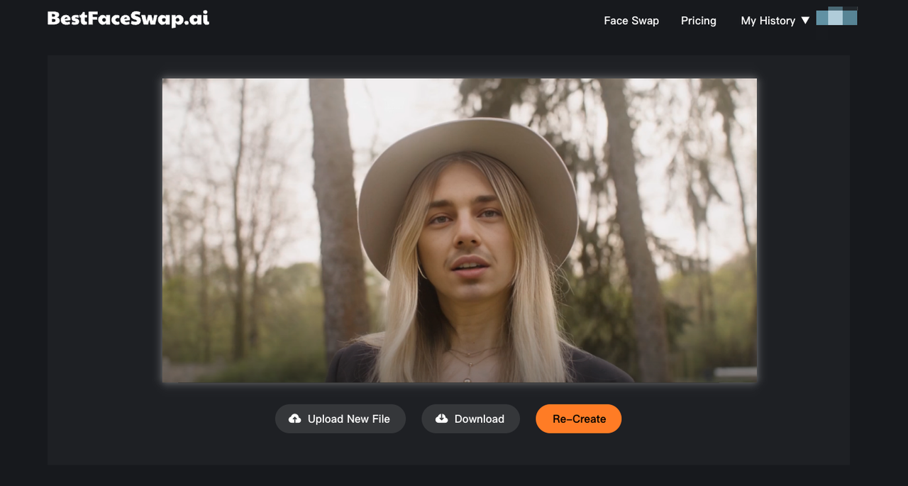
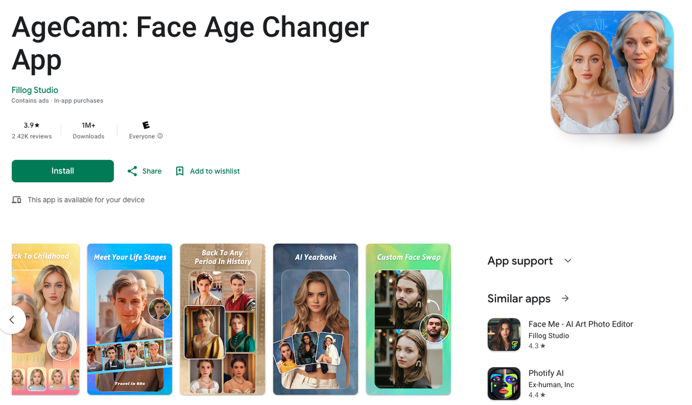
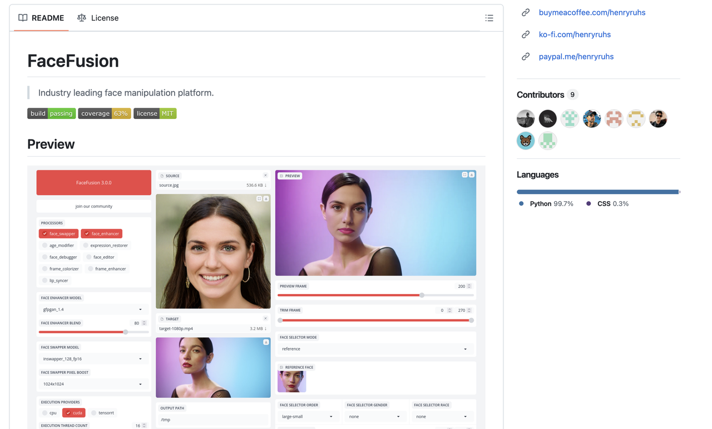
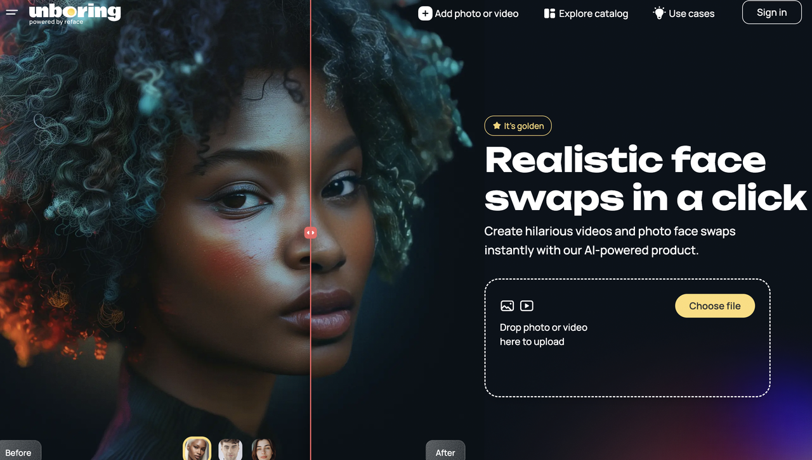

Vidnoz is a popular AI video website offering free trial face swap features for photos, GIFs, and videos. Recently, some Reddit users reported that they can no longer access the face swap feature. Has Vidnoz really shut down face swapping? And if so, what are the best alternatives? Let's dive in.
Yes, the Vidnoz face swap feature appears to be shut down. The company has closed this page, making it inaccessible to users. If you try searching 'Vidnoz face swap' on Google and click to enter the face swap page, you'll only encounter a 404 error. If you are looking for similar tools, it might be time to explore some alternative options for face swapping.
BestFaceSwap.ai is a professional online platform for face swapping in videos, GIFs, and photos. Although it does not offer a free trial, the stunning results it produces have garnered a loyal user base. This platform is renowned for its accurate face recognition, high-resolution output, and user-friendly interface, making it ideal for both newcomers and those seeking professional-grade face swap tools.
BestFaceSwap.ai operates on a subscription model:
Overall, BestFaceSwap.ai stands out as a powerful tool for anyone looking to create realistic and engaging face swaps effortlessly.
DeepSwaper is definitely a strong alternative to Vidnoz for face swapping. You can sign up with your email or Google account to receive four free credits per day on the DeepSwaper website.
If you're looking for a free alternative to Vidnoz, AgeCam is a great option. It's a free face swap app available for download on the Google Play Store. With AgeCam, you can not only swap faces in photos and videos, but also use the AI-powered time machine to see your past and future, explore different hairstyles, and try on various outfits. The best part is that you can earn free credits by watching ads.
AgeCam offers a fun and easy way to explore AI-powered features for free, with additional premium options available.
Facefusion is a great alternative for tech-savvy users. It's completely free for face swapping in photos and videos and offers more customization options to help you achieve better results. Like Roop, Facefusion is an open-source software that you can download from GitHub or install easily using Pinokio.
However, please note that Facefusion may not be suitable for beginners without coding skills or those with less powerful computers. Additionally, the software does not support multiple face swaps at once.
Facefusion provides advanced features, but it's best suited for those who are comfortable with technical setups.
Like BestFaceSwap AI, Reface offers both a face swap app and a website version, so you can enjoy it on any device. It's an excellent platform for creating memes and other creative content. With Reface, you can easily swap faces in photos, GIFs, and videos. Additionally, Reface provides a wide range of preset templates to make content creation even easier.
Reface is a great choice for anyone looking to create fun and engaging content with its versatile tools and templates.
Vidnoz AI is an advanced platform that specializes in face swapping for photos and videos. It uses AI technology to seamlessly swap faces and generate realistic results. Users can apply face swaps to photos, GIFs, and videos with high-quality output.
The exact reason hasn't been officially disclosed, so it's unclear why Vidnoz closed its face swap service. What we do know for sure is that the face swap service is no longer available on Vidnoz.
Vidnoz Face Swap was considered one of the top options for face-swapping due to its user-friendly interface and high-quality results. However, whether it is the "best" depends on your specific needs. There are other face-swapping tools like DeepSwaper, AgeCam, Reface, and Facefusion that may offer different features or better customization options, so it's worth exploring alternatives based on your preferences.
In this blog, we looked at the recent shutdown of Vidnoz's face swap feature and what it means for users. Since the feature is no longer available, we shared some great alternatives like DeepSwaper, AgeCam, Facefusion, and Reface. These platforms offer similar face-swapping tools and creative options, with both free and paid plans to suit different needs. Whether you're into making memes or just having fun with photos and videos, these alternatives have got you covered.